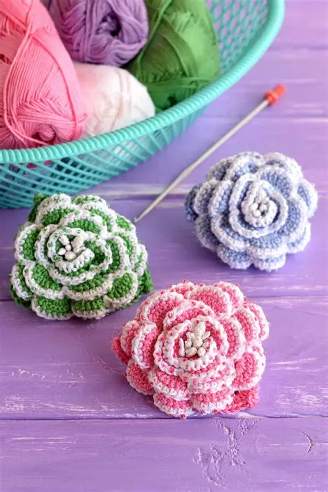
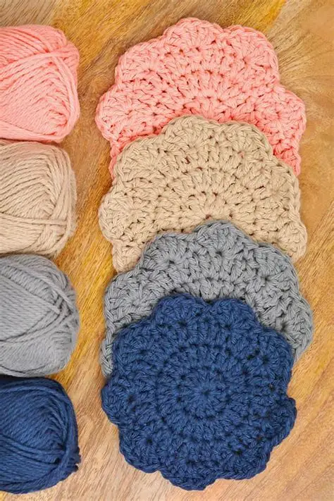
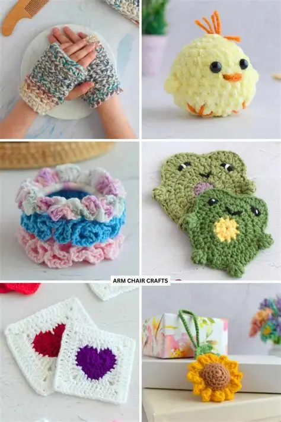
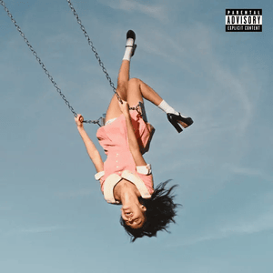
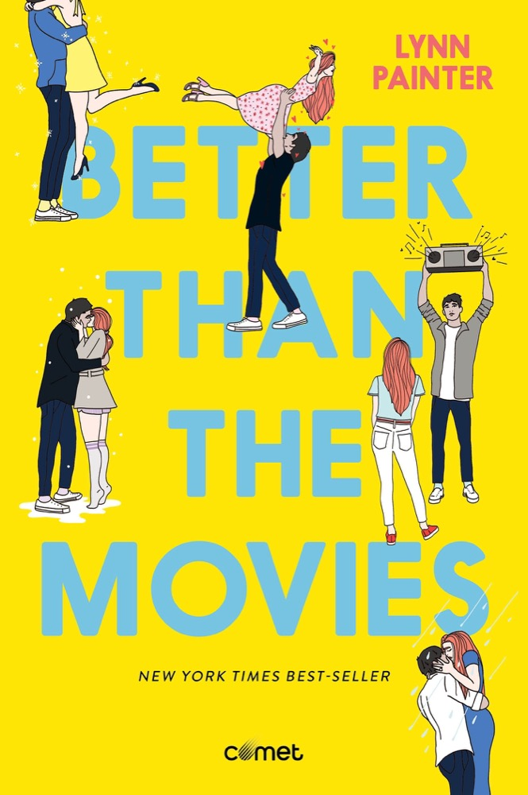

Crochet
Crochet is a handicraft in which yarn is made up into a textured fabric by means of a hooked needle. In 6th grade i was first introduced to crochet. my friend taught how to do it and ever since then ive started making my own creations. By crocheting I get to turn off my mind and take a break from reality.
Advantages of crochet:
- Allows you to take a break from life and just purely focus on the craft.
- Very versatile so you can make anything with it
- Very useful when you need to give gifts and presents to loved ones
Disadvantages of crochet
- Time consuming
- Repetitive motion can cause finger fatigue, wrist pain, or strain injuries.
- Many crochet stitches consume more yarn than knitting.
Here are some examples of crafts done by crochet



Here is a tutorial if u want to start crocheting
Music
Music is one of the few things that are universally loved and understood. And music makes me feel free of everything and just lets me rest.Here are a list of my favorite albums:
.webp)




- sunburn-dominic fike
- AM-arctic monkeys
- Promise-laufey
- You seem pretty sad for a girl-Olivia Rodrigo
- Dont forget about me demos- Dominic Fike
- Who really cares-TV girl
My favorite song of all time is white keys by Dominic Fike. Take a listen on the videon down below.
Reading
Ever since i was little i didnt particularly like reading at first. It fely more like a chore rather than an enjoyable hobby. But one day when i was 12 years old i found a book about romance between 2 teenagers. I didnt realise until then that books could be like that. So i started reading it and fell in love with it.
I mostly read english books but im trying to read more mongolian literature books since it will help me get better in my own native language. My favorite author is called Lynn Painter. She mostly writes young adult fiction and it revolves around love most of the time.
Here are some of my favorites and what i feel about them.
- Better than the movies

The reason i love this book so much is the fact that I really see myself in the main character liz. And the writing is very interesting and i love how the author created each character. - Nightingale
.webp)
This is a historical fiction that talks about two sisters during the World War 2 in France and their struggle to survive and resist the german occupaton there. The writing of this book is the reason why it is such a gem. Its very emotional and i think most people will cry during it
MY FAVORITE QUOTATIONS FROM THE BOOKS I READ:>
“If I have learned anything in this long life of mine, it is this: in love we find out who we want to be; in war we find out who we are.” - Nightingale
“Sometimes we get so tied up in our idea of what we think we want that we miss out on the amazingness of what we could actually have.” ― Lynn Painter, Better Than the Movies